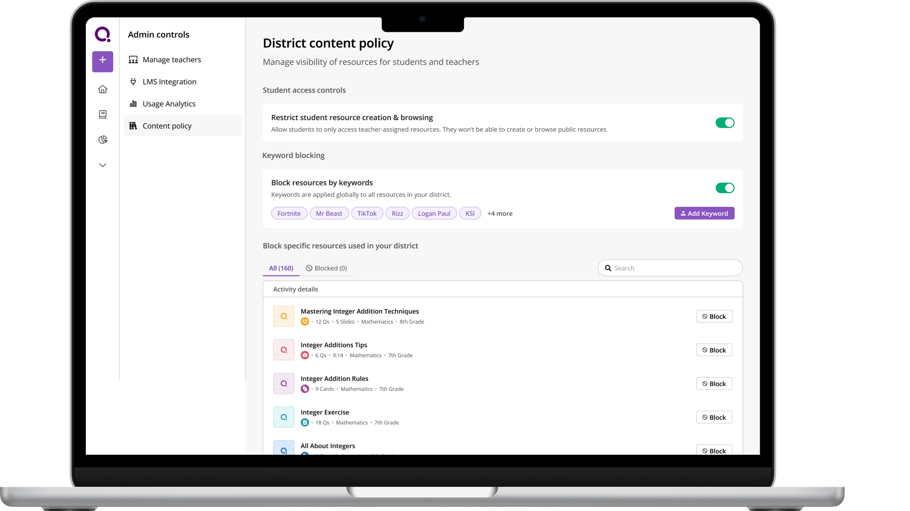
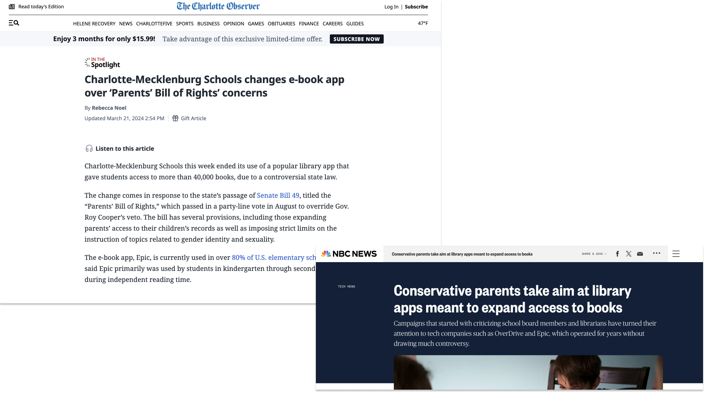
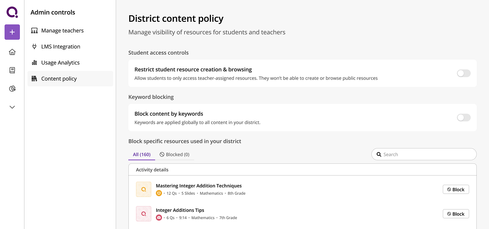
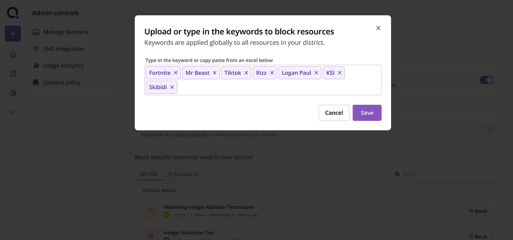
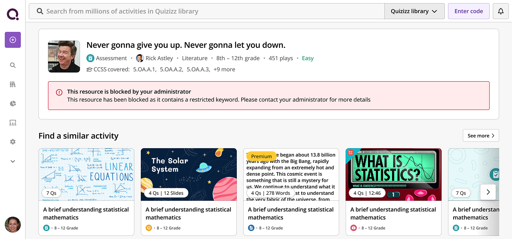
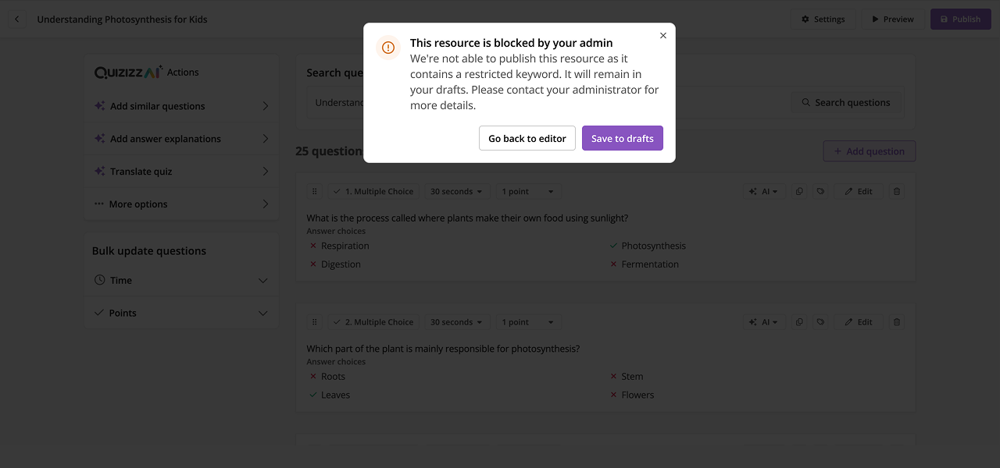

Content moderation under political pressure
Fighting to preserve product value while satisfying political concerns in conservative states

Overview
To unlock the next level of sales, Wayground had to transition from an individual teacher product to a robust enterprise solution for large schools and districts. This meant building admin controls, scalable reporting, and features that satisfied district procurement requirements - all while keeping teachers at the center of the product.
This case study is one of two projects that defined our enterprise strategy. Here I cover content moderation - fighting to preserve product value while satisfying political concerns in conservative states. The companion project, usage analytics, covers scaling customer success from manual reports to self-service dashboards.
What went into that? Mostly a lot of meetings, strategic fights, and thoughtful design.
The political context
We had this global content library - thousands of quizzes and resources that teachers could access. Great for product value.
But then Republican states started passing 'Parents Bill of Rights' laws. Any edtech platform with content mentioning LGBT, critical race theory, certain historical topics - getting blocked at the district firewall level.
We're losing deals. Sales is panicking. They come to product and say: 'Just let admins turn off the global library entirely. Problem solved.'
And I'm sitting there thinking... that's the worst possible solution.

The dilemma
Option A (what Sales wanted): Global toggle - admins turn off entire library.
- ✅ Solves the political problem
- ❌ Destroys product value
- ❌ Teachers lose access to 90% useful content because 10% is 'controversial'
- ❌ We look bad - 'the edtech platform that removed all its content'
Option B (do nothing):
- ❌ Keep losing deals in red states
- ❌ Sales continues to panic
- ❌ Problem doesn't go away
Neither option was acceptable to me.
The fight
So I pushed back hard on Sales. I'm in meetings saying:
'If we just give admins a kill switch, we're putting teachers under the bus. They lose their best resources. We're destroying the product to save a sale. And we don't even know if they'll buy after we build this.'
Sales is pissed at me. They're like, 'The customer is always right, just build what they want.'
PM is caught in the middle. Eng is waiting for us to figure it out.
This is where it got messy. I had to decide: Do I die on this hill?
Reframing the problem
So I worked with the PM to reframe the problem. Instead of:
'Should we kill the library?'
We asked:
'How do we give admins control without destroying teacher value?'
The solution: granular content moderation
We landed on a granular content moderation tool where admins could:
- Filter by keyword (LGBT, race, religion, politics, etc)
- Preview flagged content before hiding it
- Set district-wide policies
- Teachers could still request access with justification
This way:
- ✅ Admins feel in control (political cover)
- ✅ Teachers aren't blindsided (they can see what's hidden and why)
- ✅ We preserve 90% of the library value
- ✅ We show sophistication, not cowardice

Design decisions
Information hierarchy, and what we deliberately didn't show
The blank state was ordered as a hierarchy: action on students → all content → specific content. But the more consequential decision was what to leave out. In the block-specific-resources section we show only that a resource was used — not who used it or where. Admins had asked for the who and the where. We didn't build it. We're a teacher-led tool, and the fastest way to kill it would have been to make teachers feel watched. I wanted the admin's attention on content at all times, never on individual teachers, so teachers wouldn't stop using the product just because moderation was now in play.
Making the toggle feel weighty
Admins had to flip a toggle to enable keyword blocking. I deliberately wanted that to feel like a weighty action that had consequences - not something you'd flick on by accident. Turning it on changes what teachers and students across a whole district can see, so the interaction needed to carry that gravity.
Copy-paste over CSV upload
The ideal UX here was obviously to let admins upload a CSV. But when we spoke to admins, they told us they had 1000+ keywords they'd just dump in. That volume would have degraded our search and recommendations, since the system would have to account for all of them. So we let admins copy-paste from an Excel sheet or enter keywords manually instead. Frankly, we also didn't want them adding too many keywords in the first place.
Exact match, not semantic match
The other big debate was semantic matching vs exact matching. For example, do we ban resources containing "fortnight" as well as "fortnite"? Once you go semantic, you can easily end up banning resources on finance "equities" just because someone blocked "equity" as in DEI. To avoid those kinds of errors, we did exact match only.

Hiding the blocked keyword
On the activity details page, when a teacher landed on a blocked resource, we encouraged them to contact the administrator. But we deliberately couldn't show which exact keyword had triggered the block. If we did, users could just work around it - swap in a synonym or spell the word differently. So we had to think a bit adversarially here and keep the specific trigger hidden.

Saving to drafts instead of deleting
There were many edge cases to deal with here. Since Wayground is a content creation product, we couldn't afford to break the content publishing UX. So we had to figure out how to fold content moderation in at the moment a user published a resource. The idea we landed on was to save the resource into drafts instead of deleting it. That way teachers still kept access to their work, without it being visible to students.

Internal pitch & building it
But here's the thing - this was way harder to build than the kill switch. More eng effort, more edge cases, more QA.
So I had to pitch it internally:
'Yes, this takes 6 weeks instead of 2. But if we just give them a kill switch, they might not buy anyway. And if they do buy, we've built a shitty product. This solution actually solves their problem AND keeps our product good.'
We had to navigate through intense political context and sales pushback. The hard conversations with stakeholders were about balancing district needs with teacher experience, and investing engineering effort wisely. We gathered feedback internally, iterated on the approach, and figured out how to build something that satisfied everyone - or at least didn't piss everyone off.
Impact & key learnings
We shipped it. Sales used it to close 3 deals in red states worth $400K. Admins loved the control. Teachers didn't revolt because they could still request access (which was what we were really scared of).
- 3 — Deals closed in red states, worth $400K
- 15% — District adoption rate
- 90% — Library value preserved
Adoption stayed narrow: 15% of districts used the tool. Most admins didn't care about the controversy, they just wanted good content. The districts that did care carried $400K in deals.
What I learned: Sometimes you build features for 15% of customers because those 15% are strategic. And sometimes the fight isn't about the feature - it's about not destroying your product to solve a sales problem.
While content moderation unlocked sales in politically sensitive markets, we had another scalability problem: our customer success team was drowning in manual reporting requests. Enterprise customers needed usage data to justify renewals, but our CS team couldn't keep up with the volume of ad-hoc data requests. The solution would require a completely different kind of design thinking - moving from fighting stakeholders to enabling them. Read that story in usage analytics.